Next: The nonexistence of hydrostatic
Up: Some properties of the
Previous: Some properties of the
Contents
Extrema of advected scalars
That no temperature field, being a
solution of the steady-state energy equation (2.55),
can possess a strong
relative maximum or minimum at an interior point of its domain of existence
follows from the essential elliptic nature of the equation and the absence
of sources or sinks.
Theorem 1 (Nonexistence of extrema of advected scalars)
If a scalar field,

, is a regular solution of the steady-state
advection-diffusion
equation
in some domain for some scalar functions 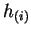,
solendoidal vector fields,
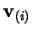, and symmetric, positive
definite tensor field,

; all continuously differentiable;
then there are no interior strong relative extrema of
.
Proof:
The idea for this proof, suggested by Prof. Bob Street
(1999, pers. comm., 4 Feb.), is to recast the equation in quasilinear
elliptic form, for which the result is known.
Carrying out the divergence,
or
where
In Cartesian tensor notation with the summation
convention in force, this is
which is of the form for which Hopf's Maximum Principle is shown to hold in
treatises on partial differential equations
(Courant & Hilbert 1962, pp. 320-8;
Garabedian 1964, pp. 227-38).
Alternative Proof:
I offer here an original and quite different proof which
I hope, by avoiding
the artifice of a comparison function and using vectorial concepts rather
than a general calculus of several variables,
is more conducive to physical intuition. The use of vectors also ensures
that the result is not tied to any particular coordinate system.
The reader uncomfortable with a
tensorial diffusivity may replace
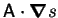 by
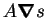
wherever it appears; this is the special case of isotropy.
The proof is by contradiction: assume that there does exist an
interior relative extremum. For definiteness, and without loss of
generality, take this to be a minimum.
Construct a family of rays originating at the minimum and terminating when
they encounter either:
- (i)
- a boundary point of the domain; or
- (ii)
- a stationary point, with respect to the ray, of ; i.e.
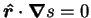, where 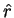 is the unit radial vector from the
minimum.
Except at the origin, and possibly the rays' termini, is strictly
increasing along the rays:
by the definitions of a minimum and the rays (ii).
Choose a value 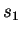 of between that at the minimum and the least of those
at the rays' termini.
Let  be the set of points with 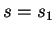 passed through by the rays.
be the set of points with 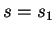 passed through by the rays.
Each ray intersects exactly once, and, since possesses at least two
continuous spatial derivatives (Gresho 1988),
is closed and smooth enough to have a well-defined unit outward normal,
 .
No ray is tangent to , since then the ray should have terminated, by (ii);
thus,
.
No ray is tangent to , since then the ray should have terminated, by (ii);
thus,
Now, by definition of the vector triple product,
but
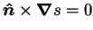, since the normal of a level surface
is parallel to the gradient; therefore,
by (2.81), (2.82) and since
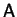 is positive definite.
Integrate the steady-state advection-diffusion equation (2.76)
over the volume  enclosed by :
enclosed by :
Applying the divergence theorem gives:
of which the right hand side is positive by (2.84).
The left hand side, however, vanishes;
| 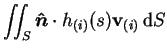 |
 |
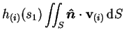 |
(2.87) |
| |
|
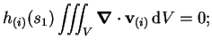 |
(2.88) |
by virtue of the hypotheses on the
.
This is a contradiction, so that the theorem is proved.
Notes:
- There would always be a net diffusion through a closed level surface
surrounding a strong relative extremum, but the net advection would vanish.
- The application to the multicomponent energy equation is clear (cf. Bird et al. 1960, pp. 561-6). The variables , ,
and
are the temperature, (tensor) conductivity, partial
specific enthalpies and absolute species fluxes, respectively. The required
assumption is that the partial specific enthalpies are independent
of pressure and composition.
- Often, as in this project, the diffusivity is isotropic;
i.e. a product of a (positive) scalar field and the Kronecker delta; and so is
symmetric and positive definite, as required.
- The diffusivity and velocities can depend on , so that the equation
is only quasilinear. In the proof, is assumed given, so that
and the
can be re-expressed as functions of position.
- Completely analogous theorems hold in one and two dimensions.
- In the special case
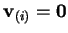 and
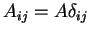, where
 is a constant,
the steady-state advection-diffusion equation (2.76)
reduces to Laplace's equation, for which the
corresponding result is classical (Lamb 1932, p. 39).
is a constant,
the steady-state advection-diffusion equation (2.76)
reduces to Laplace's equation, for which the
corresponding result is classical (Lamb 1932, p. 39).
- The species (2.53) and energy (2.55) equations
both fall under the hypotheses of the theorem.
- Thus, no extrema of vapour mass fraction or temperature are expected
in the solutions of our system of equations (2.52)-(2.55), and one can
conclude that the temperature minimum discovered by Weaver & Viskanta
(1991a;
referred to in §2.1.3) was erroneous.
- Extrema might occur if there were source or sink terms in the equations,
such as if the vapour condensed in the domain; the Dufour effect were
appreciable; or there were viscous heating.
- Extrema are
of course possible in transient advection-diffusion, as for example they
may be specified as part of the initial conditions. I leave unanswered the
question of whether strong local extrema can arise in the evolution of a scalar
field; this was predicted in the two-dimensional
numerical solutions of Bergman and Hyun (1996)
for the mass fraction of tin in a nonisothermal amalgam with lead.
Next: The nonexistence of hydrostatic
Up: Some properties of the
Previous: Some properties of the
Contents
Geordie McBain
2001-01-27